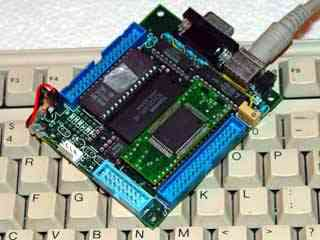

![[Return to top]](../../../epc.png)
AT keyboard interface driver by Lee Davison
[Back]
 Introduction.
The SuprDupr has a PS2 style socket for an AT keyboard. However, as it arrived, the data and clock go to the GAL and so were jumped directly to port 7 bitd 7 and 6 on the micro. There are also positions for pullup resistors on both the keyboard data and clock lines, these are not needed and were omitted. These details may have changed as this was an early production board.
Software.
The software is unfinished and provided as a starting point for anyone who wishes to make their own. As provided the driver provides very reliable basic keyboard handling.The sourceDuring developement it was noticed that the keyboard driver would sometimes hang so some test code was added to monitor the reliability (included in the source but commented out) and it was found that the routine wouldn't return about once in every 750,000 calls.
This was eventually traced to a faulty keyboard but highlighted the vunerability of the code to spurious responses from the keyboard. As a result the robustness of the code was improved by adding timeouts and the resulting code proved reliable over hundreds of millions of calls.
View or downloaddriver .asm file
![[e-mail]](../../../eml_sm.png)